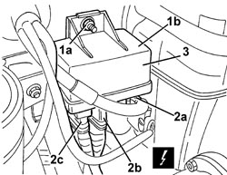

5520C20 HEATER PLUGS CONTROL UNIT - R.R
- Path
- Procedures > 55 ELECTRICAL EQUIPMENT > 5520 ENGINE STARTING > 5520C COLD STARTING SYSTEM (DIESEL ENGINES) > 5520C20 HEATER PLUGS CONTROL UNIT - R.R
- Kind
- repair procedure (removal / refitting; the operation number is the code)
- Applies to
- engines: 2.4 JTD 20v; all production periods
- Interactive page
- https://sloeber94.github.io/elrnDB-aBrrSpdr/en/#/946003397
Applies to: engines: 2.4 JTD 20v; all production periods
 Removing
Removing
 Refitting
Refitting- Open the bonnet.
1. Working behind the power unit, undo the nut (1a) and move the heater plugs control unit (1b) slightly.
2. Disconnect the electrical connections (2a, 2b and 2c).
Description | Component |
|---|---|
HEATER PLUGS CONTROL UNIT |
3. Keep the heater plugs control unit.

Applies to: engines: 2.4 JTD 20v; all production periods
Refitting
Removing- Check that the heater plugs control unit is not damaged.
- Connect the electrical connections.
- Place the control unit in position and secure it using the nut.
Component | Fastening | dia | Value (daNm) | Validity |
|---|---|---|---|---|
HEATER PLUGS CONTROL UNIT | Nut | M6 | 0.7 ÷ 1.1 | 1.9 JTD 8V 1.9 JTD 16V 2.4 JTD 20V |
- Close the bonnet.
- Check that the control unit is working.